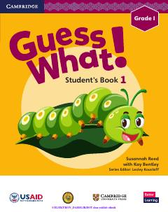

IT1-sinf o'quvchilari uchun ingliz tili fanidan zamonaviy darslik.
Ushbu darslik O'zbekiston Respublikasi Xalq ta'limi vazirligi va USAID hamkorligida 1-sinf o'quvchilari uchun tayyorlangan. Kitob Cambridge University Press materiallari asosida ingliz tilini boshlang'ich darajada o'rgatishga mo'ljallangan bo'lib, ranglar, maktab va oila kabi mavzularni qamrab oladi.